산림산업기사 (2007-03-04 기출문제)
1과목: 조림학
1. 소나무 종자를 산파할 때 1m2당 파종량은? (단, m2당 묘목본수 : 600본, 종자효율 81.6%, 종자입수 : 52,804개/L, 잔존율 : 0.3)
- 약 0.02L
- 약 0.⑤L
- 약 0.08L
- 약 0.10L
(정답률: 49%)

2. 다음 중 침엽수의 수형목지정 요령에 해당되지 않는 것은?
- 인공림의 경우 임상의 둘레나 도로변의 나무 혹은 고립목은 제외한다.
- 인공림의 경우 수령은 20년생 이상이고, 벌기령 이전의 것으로 한다.
- 천연림의 경우 지위는 한 지위에 편중하지 않는다.
- 천연림의 경우 ha당 3본 이상은 선발하지 않는다.
(정답률: 65%)
3. 증산계수(transpiration coefficient)를 가장 잘 설명한 것은?
- 생육기간 중 식물에 의해서 만들어지는 건물질 단위량당 소비된 물의 량
- 1㎏의 물 소비량에 대해서 생성된 건물질의 량
- 생성된 건물질량 대 소비한 물량의 비
- 단위 엽면적당 증산량
(정답률: 74%)
4. 택벌림의 장점에 관한 설명으로 틀린 것은?
- 병해충에 대한 저항력이 높다.
- 보속 생산을 하는데 가장 적절한 임분이다.
- 양수 수종의 갱신이 적합하다.
- 심미적 가치가 높다.
(정답률: 74%)
5. 임지 풀베기 작업의 생력화 방법으로 많이 사용되는 비선택성 경엽살포제인 약제는?
- 글라신
- 디캄바
- 씨마진
- 핵사지논
(정답률: 43%)
6. 산림입지를 결정하는 환경 조건이 아닌 것은?
- 기상환경
- 토양환경
- 생물환경
- 작업환경
(정답률: 58%)
7. 다음 수종과 파종법의 연결이 가장 잘못된 것은?
- 소나무 - 산파
- 밤나무 - 점파
- 잣나무 - 조파
- 상수리나무 - 산파
(정답률: 53%)
8. 수목이 필요로 하는 무기양분 중에서 소량만이 필요한미량원소에 속하는 무기양분은?
- 철
- 인
- 칼슘
- 질수
(정답률: 75%)
9. 묘포에서 늦어도 7월 이전에 비료를 주어야 하는 가장 주된 이유는?
- 생장기가 짧기 때문이다.
- 비료를 흡수할 시간적 여유가 없기 때문이다.
- 늦게까지 자라게 되어 월동기에 동해를 받기 때문이다.
- 장마철에 비료분의 유실이 심하기 때문이다.
(정답률: 84%)
10. 산림작업종의 분류 기준이 되는 3가지 인자는?
- 임도밀도, 벌기종, 작업비용
- 임분령, 임분의 기원, 벌기종
- 임분령, 벌구의 크기와 형태, 작업비용
- 임분의 기원, 벌구의 크기와 형태, 벌기종
(정답률: 70%)
11. 산벌작업의 작업순서로 맞는 것은?
- 하종벌 → 후벌 → 예비벌 → 갱신완료
- 후벌 → 예비벌 → 하종벌 → 갱신완료
- 하종벌 → 예비벌 → 후벌 → 갱신완료
- 예비벌 → 하종벌 → 후벌 → 갱신완료
(정답률: 88%)
12. 도태간벌의 특성에 대한 설명으로 틀린 것은?
- 우세목을 선발하는 무육벌채적 수단을 갖고 있는 간벌양식이다.
- 미래목의 수간 맹아 형성의 억제와 복층구조의유도가 용이하다.
- 방해복이 간벌됨으로써 간벌재 이용이 어렵다.
- 장벌기 고급 대경제 생산에 유리하고 간벌목 선정이 유리하다.
(정답률: 69%)
13. 다음 중 정성간벌이 아닌 것은?
- 하층간벌
- 상층간벌
- 기계적 간벌
- 본수에 의한 간벌
(정답률: 69%)
14. 중력의 힘으로 밑으로 내려가서 불투수성의 층위에 있는 수분은?
- 모세관수
- 흡착수
- 지하수
- 화합수
(정답률: 53%)
15. 다음 작업 중 경제적 수입을 기대하면서 실시하는 것은?
- 간벌
- 제벌
- 밑깎기
- 덩굴치기
(정답률: 76%)
16. 다음 수종 중 일반적인 발아율이 높은 것에서 낮은 것순으로 배열된 것은?
- 낙엽송 - 박달나무 - 해송 - 잣나무
- 잣나무 - 낙엽송 - 박달나무 - 해송
- 박달나무 - 해송 - 잣나무 -낙엽송
- 해송 - 잣나무 - 낙엽송 - 박달나무
(정답률: 48%)
17. 묘목의 해가림을 설치할 때 가장 적당한 높이는?
- 5 ~ 10㎝
- 15 ~ 20㎝
- 40 ~ 50㎝
- 60 ~ 70㎝
(정답률: 56%)
18. 나무의 줄기가 상처를 받아 뿌리에서 흡수한 물과 양료가 위로 올라가기 어렵게 된 경우, 다음 중 어느 방법을 적용하는 것이 좋은가?
- 다리접(bridge grafting)
- 아접(buding)
- 취목(bayering)
- 박접(bark grafting)
(정답률: 66%)
19. 수목의 증산량을 측정하는 방법 중 잎, 가지, 혹은 수목 전체를 투명한 용기 속에 밀봉하고 공기 중의 수증기량의 변화를 가지고 증산량을 추정하는 방법은?
- 중량법
- 용적법
- 텐트법
- TTC
(정답률: 58%)
20. 다음은 소나무 종자의 구조를 설명하는 그림(종단면)이다. ( )에 들어갈 적절한 명칭은?
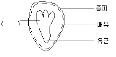
- 자엽
- 배축
- 주공
- 유아
(정답률: 69%)
2과목: 산림보호학
21. 다음은 산림이 받는 피해를 원인별로 나눈 것이다. 이 중 연해는 주로 어느 것에 속하는가?
- 인위적 피해
- 기상에 의한 피해
- 병균에 의한 피해
- 곤충에 의한 피해
(정답률: 75%)
22. 식물바이러스에 대한 설명으로 잘못된 것은?
- 대부분 핵산은 RNA이다.
- 접목 전염이 가능하다.
- 전신 감염이 많다.
- 인공 배지에서 잘 자란다.
(정답률: 91%)
23. 다음 중 진균의 유성생식에 의해 생성된 포자는?
- 분열포자
- 유주포자
- 자낭포자
- 분생포자
(정답률: 62%)
24. 성비가 0.55인 곤충이 있다고 가정한다. 전 개체수가 300마리이면 이 곤충의 수컷개체 수는?
- 185 마리
- 165 마리
- 135 마리
- 115 마리
(정답률: 62%)
25. 대추나무빗자루병에 관한 설명으로 틀린 것은?
- 병원체는 조건적 기생균이다.
- 주로 사부(phloem)에 기생한다.
- 옥시테트라싸이클린 수간주사로 치료가 가능하다.
- 병원체는 파이토플라스마이다.
(정답률: 78%)
26. 다음 중 기공감염을 하는 병원균은?
- 잿빛곰팡이균
- 소나무류 잎떨림병균
- 포플러줄기마름병균
- 모잘록병균
(정답률: 84%)
27. 해충밀도의 축차조사법에 대한 설명으로 틀린 것은?
- 조사 표본수를 미리 일정하게 정한다.
- 개략적인 해충밀도를 파악할 때 쓰인다.
- 어떤 방제법의 사용 필요성 여부를 판단할 때 쓰인다.
- 일반 해충밀도 조사법에 비하여 경비가 저렴하다.
(정답률: 32%)
28. 다음 중 솔잎혹파리의 주요 가해 부위는?
- 잎
- 줄기
- 어린 가지
- 굵은 가지
(정답률: 67%)
29. 다음 중 기주범위가 상대적으로 좁고, 기주식물이 없는 한 오래 살아 남을 수 없는 병원균으로 윤작으로 방제효과를 얻을 수 있는 것은?
- 침엽수모잘록병균
- 오리나무갈색무늬병균
- 흰비단병균
- 자줏빛날개무늬병균
(정답률: 53%)
30. 어떤 병의 병원체를 입증하는 “코흐의 4원칙”이 아닌 것은?
- 미생물은 반드시 환부에 존재해야 한다.
- 미생물은 분리되어 배지상에서 순수 배양되어야 한다.
- 순수배양된 미생물을 분리하여 동정해야 한다.
- 발병한 피해부에서 접종에 사용한 미생물과 같은 성질을 가진 미생물이 재분리 되어야 한다.
(정답률: 49%)
31. 산림 해충 방제를 위한 산림 시업이 아닌 것은?
- 소면적 단위의 벌채
- 단목을 택벌
- 혼효림 시업
- 위생 벌채
(정답률: 50%)
32. 폭풍 또는 산불의 피해가 있는 후 유발되기 쉬운 해충은?
- 솔잎혹파리
- 버들재주나방
- 미국흰불나방
- 소나무좀
(정답률: 63%)
33. 다음 중 종실을 가해하는 해충이 아닌 것은?
- 복숭아명나방
- 방애기잎말이나방
- 복숭아유리나방
- 솔알락명나방
(정답률: 67%)
34. 지표식물을 이용하여 질병을 진단하는 것은?
- 혈청학적 진단
- 해부학적 진단
- 이화학적 진단
- 생물학적 진단
(정답률: 92%)
35. 다음 중 무당벌레가 천적인 대표적인 해충은?
- 말총벌
- 솔나방
- 진딧물
- 흰불나방
(정답률: 79%)
36. 다음 중 만상의 피해를 받기 쉬운 경우는?
- 남방산 수종을 한냉한 지역으로 이식한 경우
- 해충의 피해를 받아 동아가 다시 생장하는 경우
- 북방산 수종을 보다 따뜻한 지역으로 이식한 경우
- 초가을의 날씨가 따뜻하여 동아가 생장하는 경우
(정답률: 73%)
37. 다음 중 병원균의 잠복기간에 대한 설명으로 옳은 것은?
- 포자가 잎 위에 떨어져 병징이 나타날 때까지의 기간
- 포자가 바람에 날릴 때부터 감염이 이루어질 때까지의 기간
- 감염이 이루어져서부터 병징이 나타날 때까지의 기간
- 병징이 나타난 직후부터 고사할 때까지의 기간
(정답률: 90%)
38. 다음 중 솔나방의 월동 상태는?
- 알
- 번데기
- 유충
- 성충
(정답률: 79%)
39. 솔잎혹파리의 방제방법 중 수주간입 약제로 가장 적합한 것은?(정답은 3번입니다.)
- 복원중 (정확한 보기내용을 아시는분께서는 오류 신고를 통하여 보기 내용 작성 부탁드립니다.)
- 복원중 (정확한 보기내용을 아시는분께서는 오류 신고를 통하여 보기 내용 작성 부탁드립니다.)
- 복원중 (정확한 보기내용을 아시는분께서는 오류 신고를 통하여 보기 내용 작성 부탁드립니다.)
- 복원중 (정확한 보기내용을 아시는분께서는 오류 신고를 통하여 보기 내용 작성 부탁드립니다.)
(정답률: 62%)
40. 임지에 쌓여있는 낙엽과 지피물, 갱신치수 및 지상 관목 등이 타는 산림화재의 종류는?
- 지중화
- 지표화
- 수관화
- 수간화
(정답률: 95%)
3과목: 임업경영학
41. 법정축적법에 의한 표준벌채량 결절에 필요한 사항이 아닌 것은?
- 법정축적
- 연벌구면적
- 현실림의 축적
- 생장량
(정답률: 64%)
42. 전림면적을 50ha, 표준지 면적을 2.5ha, 표준지 재적을 100m3라 할 때 표준지 척정법에 의한 전림재적은?
- 1000 m3
- 1500 m3
- 2000 m3
- 2500m3
(정답률: 68%)
43. Huber 식에 의해 벌채목의 재적을 계산하는 옳은 식은? (단, V=벌채목재적(m3), =원구단면적(m2), =중앙단면적(m2), =말구단면적(m2), L=재장(m) 이다.)
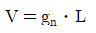
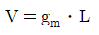
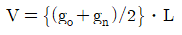
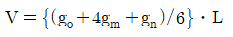
(정답률: 74%)
44. 임지의 평가 방법이 아닌 것은?
- 비용가법
- 환원가법
- 기망가법
- 절충비교법
(정답률: 64%)
45. 임업노동의 일반적인 특성을 바르게 설명한 것은?
- 산림이 넓고 험하기 때문에 필요한 자재의 수송은 어려우나 작업감독은 용이하다.
- 작업장소인 산림까지의 이동시간이 길어서 실제 작업시간도 길어진다.
- 단위면적당 노동량이 많아 노동분쟁이 자주 일어난다.
- 농업노동력을 벌채 ㆍ 운반노동에 이용하려면 별도로 훈련을 시켜야 한다.
(정답률: 63%)
46. 다음 중 임업의 경제적 특성에 대한 설명으로 틀린 것은?
- 육성임업과 채취임업이 병존한다.
- 임업생산은 조방적이다.
- 임업은 공익성이 적으므로 제한성이 적다.
- 원목가격 내 운반비가 차지하는 비중이 높다.
(정답률: 62%)
47. 다음 중 산림측량에 해당되지 않는 것은?
- 주위측량
- 산림구획측량
- 시설측량
- 지형측량
(정답률: 44%)
48. 협업경영에서 발생하기 쉬운 문제점이 아닌 것은?
- 과잉투자 발생
- 기술관리 소홀
- 노동제한 현상
- 통제질서 확립
(정답률: 70%)
49. 감가상각비 총액을 각 사용연도에 할당하여 매년 균등하게 계산하는 방법은?
- 정률법
- 급수법
- 비례상각법
- 정액법
(정답률: 60%)
50. 산림구획 및 산림조사를 할 때 그 결과를 도면으로 만드는데 다음 중 기본도의 도면은?
- 축척 1/50000 임야도
- 축척 1/25000 임야도
- 축척 1/20000 임야도
- 축척 1/6000 임야도
(정답률: 40%)
51. 명목적 임업이율(r)이 15%이고, 과거의 물가등귀율을 참고할 때 앞으로의 일반물가등귀율(s)을 10%로 예측한다면, 실질적 임업이율(P)은?
- 약 3%
- 약 4%
- 약 5%
- 약 6%
(정답률: 75%)
52. 법정림개념의 기초를 확립한 사람은?
- Heyer
- Cotta
- Judeich
- Hundeshagen
(정답률: 45%)
53. 임종조사에 관한 설명으로 옳은 것은?
- 임준이 성립된 원인을 규명하는 일
- 임분내 수종을 조사하여 임목의 배열상태를 명백히 하는 일
- 일정한 임지에서 각 수관이 투영한 상태를 파악하는일
- 임목을 흉고직경의 크기에 따라 나누는 일
(정답률: 43%)
54. 자본장비도와 자본효율의 개념을 임업에 적용할 때 각각에 해당하는 것은?
- 자본장비도 : 임목축적 자본효율 : 생장률
- 자본장비도 : 소득 자본효율 : 노동
- 자본장비도 : 임목축적 자본효율 : 노동
- 자본장비도 : 노동 자본효율 : 생장률
(정답률: 60%)
55. 어떤 산림에서 20년 후에는 주벌수입으로 30000000원을 얻는다면 연이율이 6% 일 때 현재가는? (단, 1/1.0620=0.3118이다.)
- 약 8621552원
- 약 9354000원
- 약 10354000원
- 약 11621552원
(정답률: 59%)
56. 임목 시장가역산법 계산식에서 자금회수기간을 사업기간의 얼마로 정하는가?
- 1/10
- 1/5
- 1/4
- 1/2
(정답률: 41%)
57. 매년 말에 r씩 영구히 수득할 수 있는 이자의 전가합계(K)를 나타내는 무한연이자의 전가합계식은? (단, p = 연이율(%)이다. )
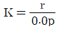
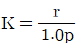
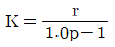
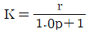
(정답률: 32%)
58. 산림 시업에 있어 본업에 속하지 않는 것은?
- 산림조사
- 조림계획
- 수확량 결정
- 임도시설 계획
(정답률: 29%)
59. 표준지의 면적을 정하는 방법에서 중경목은 전체 면적의 몇 %를 차지하는가?
- 5%
- 10%
- 15%
- 20%
(정답률: 60%)
60. 어떤 임분에서 표본목 6본을 선발하여 수령을 측정한바 20년, 25년, 30년, 40년, 35년, 30년이었다. 다음 중 임령 표시가 맞는 것은?
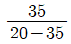
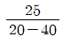
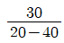
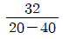
(정답률: 53%)
4과목: 산림공학
61. 4행정 기관의 작동 순서에서 제 3단계는?
- 폭발
- 흡입
- 압축
- 배기
(정답률: 52%)
62. 저목장 및 임내 가공용 기계가 아닌 것은?
- 크레인(crane)
- 치퍼(chipper)
- 프로세서(processor)
- 프크 리프트(fork lift)
(정답률: 30%)
63. 반지름이 다른 곡선이 같은 방향으로 연속되는 곡선은?
- 복심곡선
- 배향곡선
- 반향곡선
- 완화곡선
(정답률: 55%)
64. 산림자원의 조성 및 관리에 관한 법규상 설계속도가 40km/시간 일 때 일반지형의 최소곡선반지름은?
- 60m
- 40m
- 30m
- 20m
(정답률: 58%)
65. 다음 임도구조의 설명 중 틀린 것은?
- 임도의 너비 : 차도너비에 측구를 합한 전체 너비
- 길어깨 : 차도에 접속되어 차도의 구조부를 보호할 목적으로 차도 양쪽에 설치한 부분
- 보호길어깨 : 노상시설 중 가드레일 등을 길가에 설치하기 위한 공간
- 차도너비 : 설제로 차량이 주행하는 부분
(정답률: 40%)
66. 임도의 종단구배(%)를 구하는 방법은?
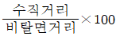
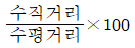
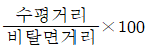
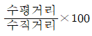
(정답률: 64%)
67. 평균강우량산정법에 의한 평균강우량은 실제의 평균강우량과 편차가 있다. 편차의 정도에 가장 큰 영향을 미치는 것은?
- 우량 측정 장비
- 우량계측망의 밀도
- 우량관측자
- 우량관측 시간
(정답률: 53%)
68. 다음의 와이어로프 설명 중 옳은 것은?
- 작업줄은 랑 Z꼬임이 사용된다.
- 와이어의 꼬임과 스트랜드의 꼬임이 동일 방향으로 된 것을 보통꼬임이라 한다.
- 랑꼬임은 킹크가 일어나기 어려우며 마모되기 쉽다.
- 임업용 와이어로프는 스트랜드의 수가 6개인 것을 많이 사용한다.
(정답률: 46%)
69. 다음 중 평면선형의 종류에 해당되지 않는 것은?
- 종곡선
- 복합곡선
- 단곡선
- 반향곡선
(정답률: 50%)
70. 사방댐 중 모르타르를 사용하지 않고 석재 또는 콘크리트 블록만으로 축조한 댐은?
- 찰쌓기 댐
- 메쌓기 댐
- 돌망태 댐
- 혼합쌉기 댐
(정답률: 69%)
71. 다음 중 치산사방사업의 직접적 효과가 아닌 것은?
- 산지 침식 및 토사유출방지
- 하천공작물의 보호
- 홍수조절 및 수원함양
- 하상 물매 완화 및 계류 보전
(정답률: 35%)
72. 일반적으로 트랙터가 임내를 주행하면서 집재가 가능한 임지 경사도 한계는?
- 15% 이하
- 25% 이하
- 35% 이하
- 45% 이하
(정답률: 36%)
73. 소실수량에 대한 설명으로 옳은 것은?
- 소비수량이라고도 하며 강수량(p)에서 증발산량을 뺀 수량과 같다.
- 소비수량이라고도 하는데 증발산량과 유출량을 합한 것과 같다.
- 증발산량과 같으며 강수량에서 유출량을 뺀 값과 같다.
- 강수량과 유출량을 합한 값을 말한다.
(정답률: 56%)
74. 곡선반지름 100m, 교각 30° 일 경우 접선 길이는?
- 약 53.36m
- 약 26.79m
- 약 3.53m
- 약 3.41m
(정답률: 34%)
75. 산지사방 식재용 수종의 요구 조건으로 틀린 것은?
- 성장력이 왕성하여 잘 번식할 것
- 토양개량 효과가 기대될 것
- 묘목의 생산비가 적게 들고 가급적이면 경제 수종일 것
- 뿌리의 자람이 느릴 것
(정답률: 79%)
76. 와이어로프의 절단하중이 5톤이고, 최대장력이 1톤일 때, 이 와이어로프의 안전계수는?
- 0.2
- 5
- 10
- 50
(정답률: 62%)
77. 임도간격, 임도밀도 및 집재거리의 상호관계를 설명한 것 중 틀린 것은?(단, D:지선임도밀도, a:임도효율요인, S:평균집재거리)
- 임도망의 확장은 임도간격과 임도밀도에 의하여 적절히 결정되며, 이들은 서로 상호관계에 있다.
- 임도의 한쪽으로만 임목을 집재할 때 평균집재 거리는 임도간격의 1/2이다.
- 도로 양쪽으로부터 임목이 집재되고 도로 양쪽의 면적이 같다고 가정할 때 평균 집재 거리는 임도간격과 동일하다.
- D=a/S식은 임도밀도를 알고 있을 때 평균집재거리를 측정하는 데 사용할 수 있다.
(정답률: 45%)
78. 기계톱을 사용한 벌목작업에서 사고 발생률이 가장 높은 인체 부위는?
- 머리
- 팔
- 가슴
- 다리
(정답률: 44%)
79. 다음 중 원래는 적재 운반기계이나 국내에서 임도시공시 굴착된 토사의 단거리 운반에 가장 많이 사용되는 기계는?
- 덤프트럭
- 모터그레이더
- 트랙터 셔블
- 스크레이퍼
(정답률: 50%)
80. 반송기가 불필요한 가선집재 방식은?
- 단선 순환식
- 러닝 스카이 라인식
- 타일러식
- 스너빙식
(정답률: 23%)
종자효율이 81.6%이므로, 1L의 소나무 종자로 파종할 수 있는 면적은 0.816m2이다.
종자입수가 52,804개/L이므로, 1L의 소나무 종자에는 52,804 x 0.816 = 43,116개의 소나무 종자가 들어있다.
잔존율이 0.3이므로, 실제로 파종할 수 있는 소나무 종자의 양은 43,116 x 0.3 = 12,935개이다.
따라서, 1본에 필요한 소나무 종자의 양은 1/600m2이고, 이를 구하기 위해서는 12,935개의 소나무 종자가 필요하다.
종자입수가 52,804개/L이므로, 필요한 소나무 종자의 양은 12,935/52,804 = 약 0.245L이다.
따라서, 소나무 종자를 산파할 때 1m2당 파종량은 약 0.⑤L이다.